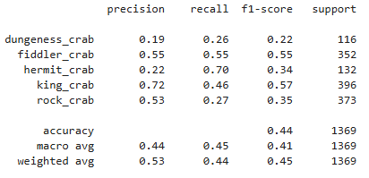

Model Analysis Build, train, and evaluate a CNN model to classify crustaceans using TensorFlow, an open-source
platform for machine learning that provides computer vision (CV) and image classification tools.
Model Training Process
Data Preparation:
Build the Model:
Compile the Model:
Train the Model:
Model Prediction:
Model Evaluation
Confusion Matrix

Model Classification Report
×
×
×
×
×
×
×
×
Dungeness Crab
An oval-shaped carapace that is yellow-brown to purplish. They have four pairs of walking legs and a pair of claws.
Fiddler Crab
Are small, semi-terrestrial crabs are characterized by extreme cheliped asymmetry in males.
Hermit Crab
A soft exoskeleton and a twisted abdomen to fit into snail shells.
King Crab
They range in color from brownish to bluish red and are covered in sharp spines. They have three pairs of walking legs and one pair of claws.
Rock Crab
A wide carapace that is quite smooth to the touch and two large claws of equal size with black tips.